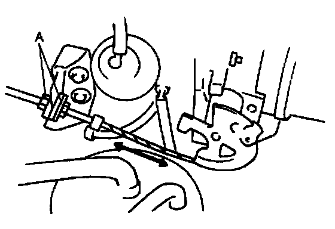

Accelerator Pedal: Adjustments
ACCELERATOR CABLE ADJUSTMENT1. Verify that the throttle valve is at the closed throttle position.

2. Measure the free play of the accelerator cable.
Free play: 1-3 mm (0.04-0.11 in)
3. If not within the specification, adjust by turning locknuts A.
Tightening torque: 9.8-14 Nm (1.0-1.5 kg.m, 7.3-10 ft.lb)